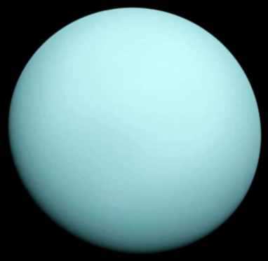

Urano se caracteriza por ser un planeta muy frío porque estar alejado del Sol. Su eje de rotación está muy inclinado, y se ve de color azulado por los gases que forman su superficie Urano también tiene un sistema de anillos y unos cuantos satélites naturales entre los que se encuentran Titania, Oberón y Miranda. Su nombre es en honor a Urano, dios romano del cielo
